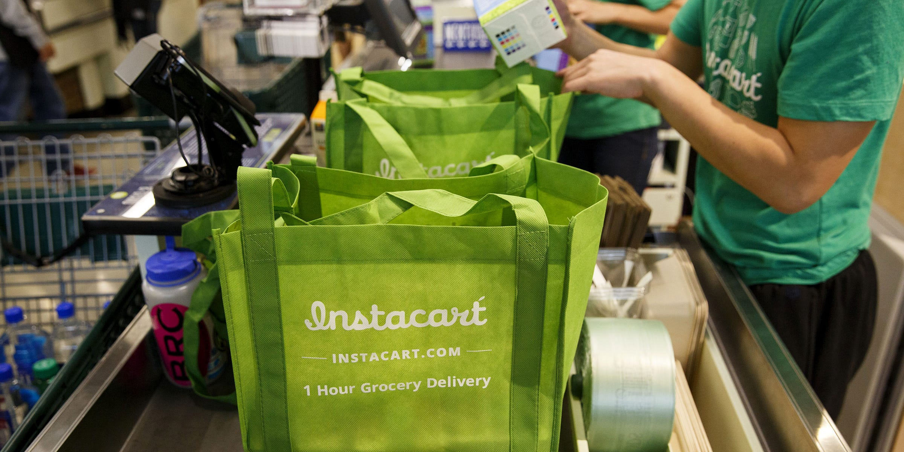
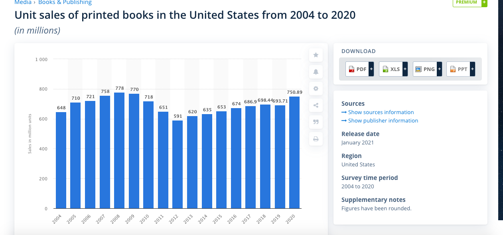

Print Books Delivery Service
From food delivery to fast print book Delivery


You may now instacart which is a very good Food delivery business that lets you get groceries fastly wherever you are. CoffeeBook is just like instacart but it allows you get a fresh print book wherever you are in less than 30 minutes because print book matter a lot more than ebook for who love books and want to stay focused.
Print books one produced need no electricity and don’t bother you with notifications that make you lose your concentration. Of course, this world needs more trees and paperless matter but is the 1% of the population that loves books who will be erasing trees from our world by buying, renting, or sharing them in print. The answer could be yes but we should estimate the amount of energy we are spending by using ebooks and make a clear decision once we have data that prove which one way of consumption is the best but meantime people like you and me still love and need print books because we feel better when holding the paper and we are more concentrated.
Print book reading experience is for sure different from ebook reading experience and the statistics of sales really prove that people like you still care about the print format

more than 700 million print books were sold in 2020 but all of these print books were delivered one or more days after the purchase but now with CoffeeBook, you get the book you buy or rent anywhere you want in no more than 30 minutes.
More than a book only you will likely get a coffee also to consume while you are waiting for your book to come ready to be read and highlight to you knowledge that will help you level up and increase your status because these are some of the many benefits that a book procures whatever its format is.
CofeeBook hopes that every big tech company will engage in coffeeBook like they will do with this gaming experience because tech and business people love reading and giving them almost instant access to print books matters as much as getting on using a Kindle device.
PS: This is one of the tech-enabled services or calls it book-driven services if you want that is being incubated by Book Dojo a mail only startup that publishes data-driven books, build and operate book-driven services and platforms for book lovers.